구조 소식
왜 하필 이런 곳에 남겨졌을까요
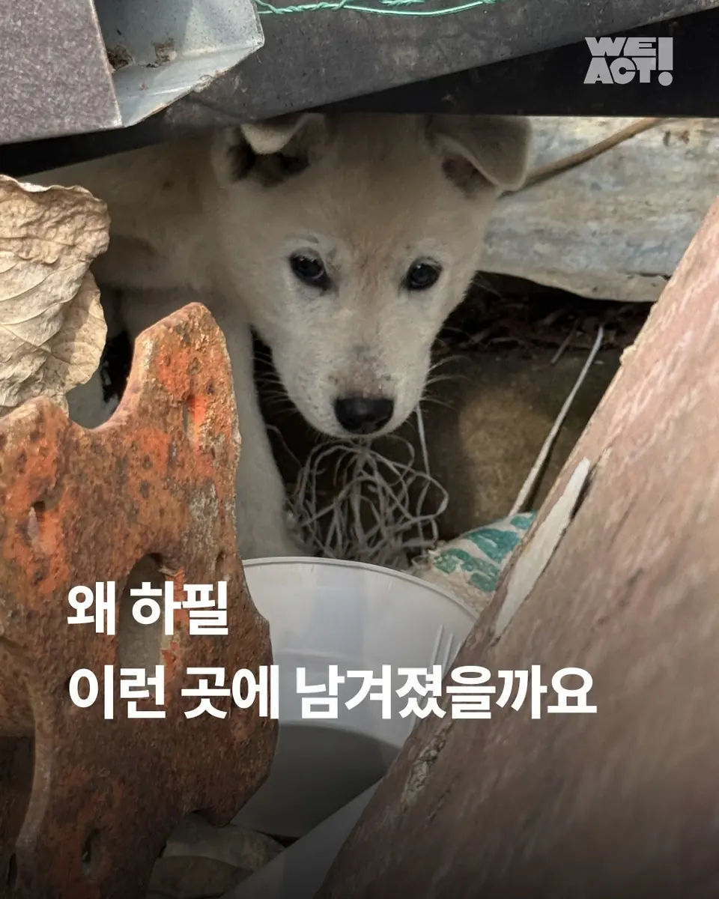
왜 하필 이런 곳에 남겨졌을까요?
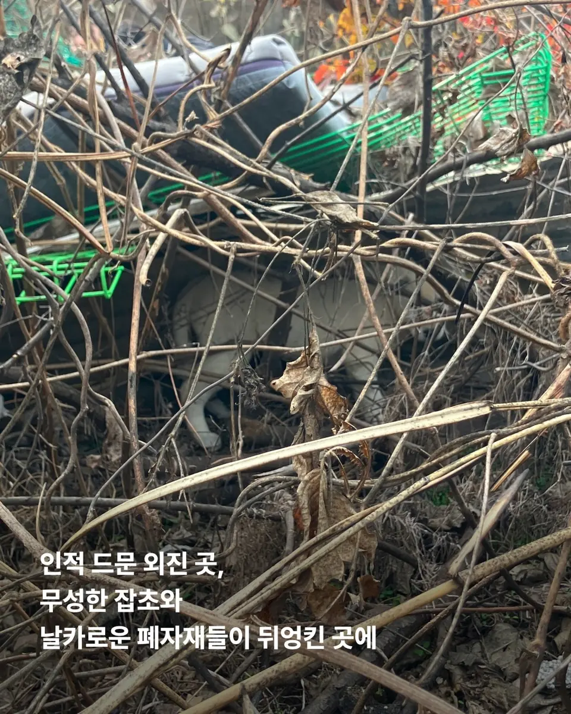
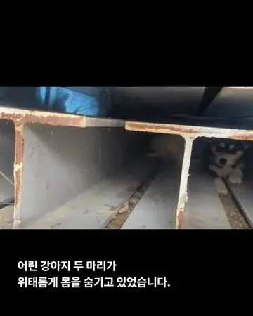
인적 드문 외진 마을 한 켠, 무성한 잡초와 날카로운 폐자재들이 뒤엉킨 곳.
어린 강아지 두 마리가 몸을 숨기고 있습니다.
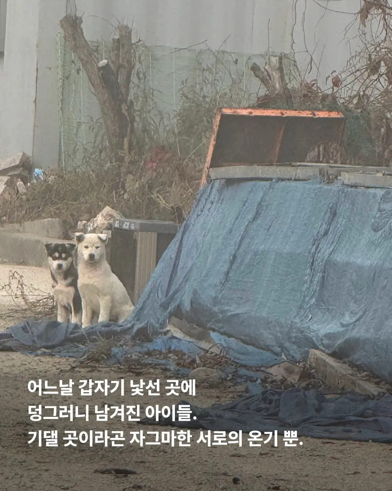
주변을 아무리 둘러봐도 이 강아지들이 살만한 민가도,
강아지들의 엄마로 추정되는 개도 보이지 않습니다.
어느날 갑자기 낯선 곳에 덩그러니 남겨진 두 아이.
기댈 곳이라곤 자그마한 서로의 온기 뿐이었어요.
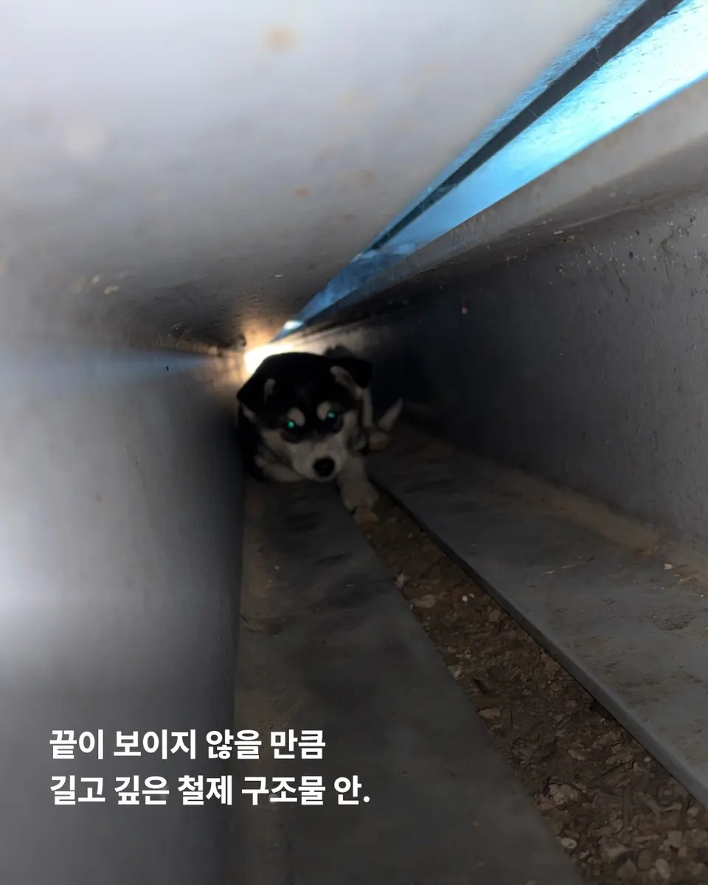
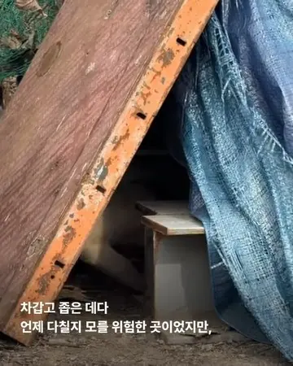
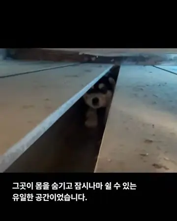
구조를 시작하자, 어린 강아지들은
끝이 보이지 않을 만큼 긴 철제 구조물 안으로
더 파고들며 숨습니다.
그곳이 몸을 숨기고 잠시나마 쉴 수 있는 유일한 공간이었겠죠.
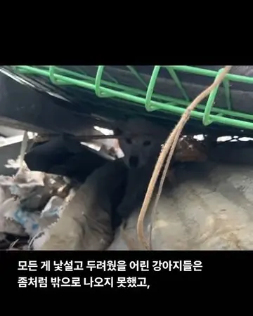
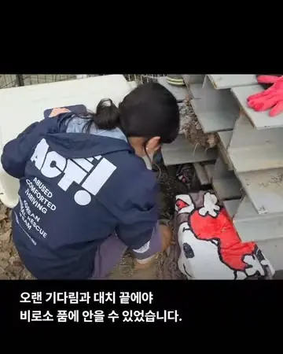
모든 게 낯설고 두려웠을 두 녀석은
좀처럼 밖으로 나오지 못했고,
오랜 기다림과 대치 끝에야 비로소 품에 안을 수 있었습니다.
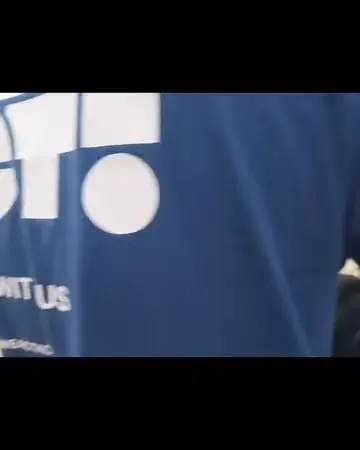
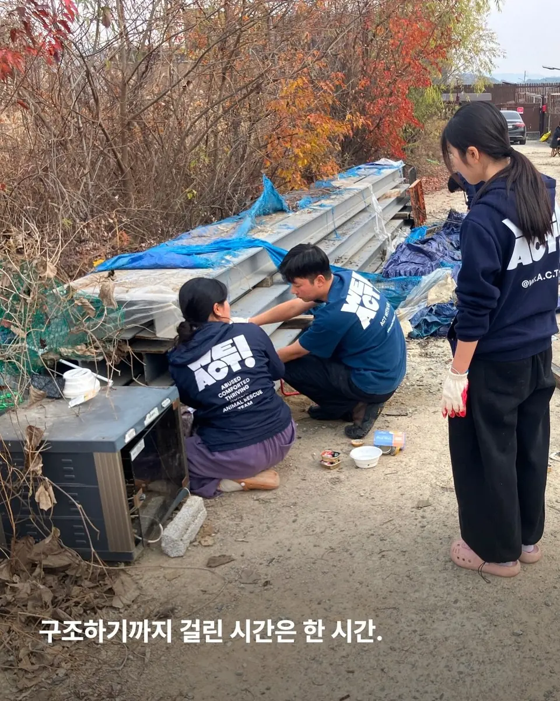
구조하기까지 걸린 시간은 한 시간.
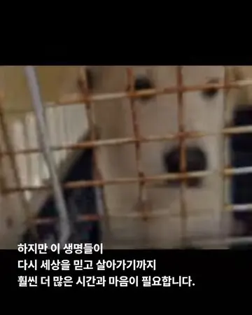
하지만 이 생명들이 다시 세상을 믿고, 두려움 없이 살아가기까지는 그보다 훨씬 더 많은 시간이 필요합니다.
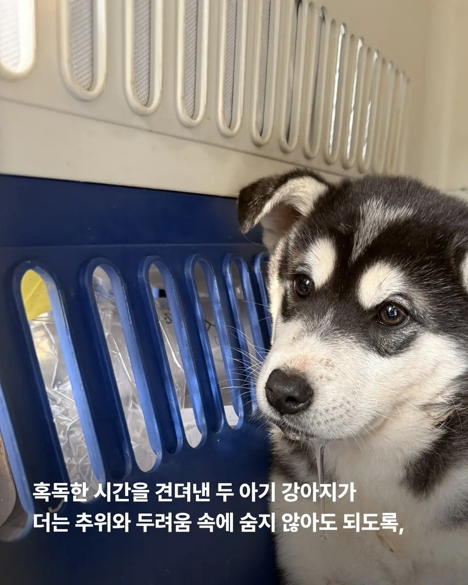
혹독한 시간을 견뎌낸 두 아기 강아지가
더는 추위와 두려움 속에 숨지 않아도 되도록,
앞으로의 여정에 함께해 주세요.
여러분의 후원이 필요합니다.
위액트니키 위액트홉스
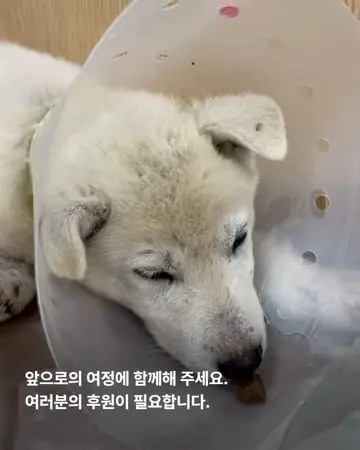
🚨후원자명에 ’용인구조견‘ 또는 ’니키홉스‘를 입력해주시면,
소중한 후원금은 어린 강아지들을 위해 사용됩니다.🚨